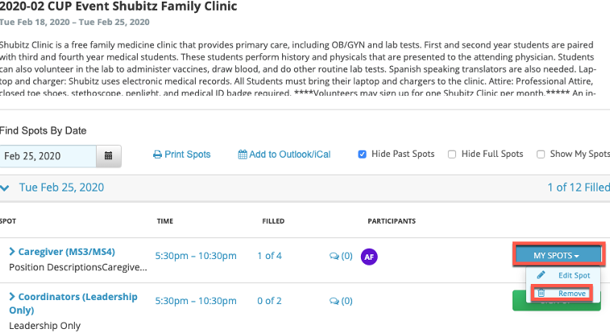
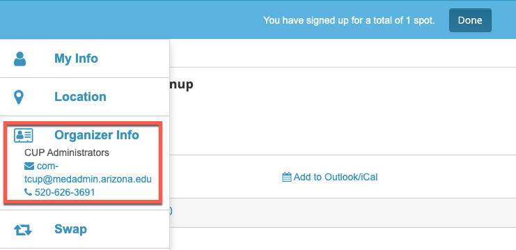

Signup.com Student Guide
1. Registering for a Sign-up.com account
In order to signup for CUP Clinic events you must register for a Sign-up.com account. To register for an account
- Open a browser
- Navigate to https://www.signup.com
- Click Register in the top right corner of the screen
- Enter your required information
- Firstname
- Lastname
- Email:
- Important: You need to use your official University of Arizona Email address netid@email.arizona.edu. If you do not you will not get credit for CUP hours worked.
- Verify the Captcha image
- Click Continue

- You have successfully registered your account with Signup.com
2. Signing up for CUP Clinic Spots
When CUP Clinic sign-ups are available you will access the events by clicking on a link in MedCats. The Link will navigate you to signup.com with a list of all available spots for the CUP clinic.
To register a spot:
- Click the link to be navigated to Sign-up.com
- You will find all Sign-ups available for the CUP Clinic
- Click View next to each Sign-up to view available spots
- Once you find a spot to sign up for Click the Green Sign Up button
- Sign in with your NetID@email.arizona.edu and Click Continue
- Confirm your email
- Enter your Phone number
- Decide if you want SMS reminders (Text Messages)
- Enter your NetID NOTE: you must enter your CORRECT NetID here. You will not receive credit if your NetID is incorrect.
- Click Save and Done


3. Remove your registration
Up until one week PRIOR to the Sign-Up you will be able to remove your registration and allow others to sign-up for your spot.
To remove your registration:
- Navigate to Sign-up.com
- Sign-in using your username and password
- Scroll to the My Invitations section of your Dashboard
- Click the name of the Sign-up
- Click the Blue My Spots button
- Select Remove
- Confirm your removal



4. Find the organizer for your event
If there is any questions regarding the event that you signed up for or if you need to contact the organizer for any reason please follow these instructions on how to get the information for your organizer:
- Log into Signup.com
- Scroll down and select the event you signed up for in the My Invitations section
- Click the index card in the left hand menu  The organizer's contact information will be listed